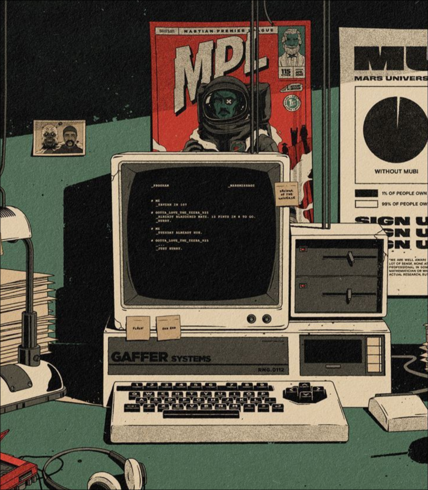

Sub-Chapter 1
Shallow Clone Nixpkgs

- Shallow clone nixpkgs, the full Git history isn't always necessary and this can speed up build times.
- The only issue I've had is
nix-index-databasenot working well with the shallow clone... Alsojujutsumay not play well with this. This may benefit low powered machines the most.
# flake.nix
inputs = {
nixpkgs.url = "git+https://github.com/NixOS/nixpkgs?shallow=1&ref=nixos-unstable";
};
- Some times when you might need a full clone are debugging and working with repository history but those are rare.
Import your Non-Flake Wallpaper Repo
- Importing your non-flake wallpapers repo, you can use this one there are a ton of wallpapers I've collected over time:
# flake.nix
inputs = {
wallpapers = {
url = "github:saylesss88/wallpapers";
flake = false;
};
}
- After adding the input I can access individual wallpapers by adding the
inputsargument and something likepath = "${inputs.wallpapers}/Aesthetic Scenery.jpg";
Understanding @-patterns
- Understanding
@-patterns, being able to reference your outputs argument set as a whole. An@-patternis a way for a function can access variadic attributes (i.e. varying number of arguments).
# flake.nix
inputs = {
home-manager.url = "github:nix-community/home-manager/master";
home-manager.inputs.nixpkgs.follows = "nixpkgs";
stylix.url = "github:danth/stylix";
};
outputs = {
self,
nixpkgs,
home-manager,
} @ inputs:
With the above example to add the modules to your nixosConfigurations you would add something like this:
# flake.nix
nixosConfigurations.${host} = nixpkgs.lib.nixosSystem {
inherit system;
specialArgs = {
inherit inputs username host email systemSettings;
};
modules = [
./hosts/${host}/config.nix
inputs.stylix.nixosModules.stylix
home-manager.nixosModules.home-manager
# .. snip ..
];
- Notice that since home-manager was explicitly listed in the outputs arguments:
outputs = { self, nixpkgs, home-manager, };theinputsprefix is unnecessary. If home-manager was removed from the outputs arguments:outputs = { self, ... }then you would needmodules = [ inputs.home-manager.nixosModules.home-manager];This can be confusing because many docs assume your not using an @-pattern so if you have one in your flake you need to prefix withinputs. I use this to reference my personal wallpapers repo mentioned earlier.
Understanding specialArgs
- Understanding
specialArgs(nixos) andextraSpecialArgs(home-manager). Building on the @-patterns, usingspecialArgsandextraSpecialArgsis a way to pass arguments from your flake to your NixOS and home-manager modules.
For example, here is a snippet of some variables I set:
# flake.nix
outputs = {
self,
nixpkgs,
home-manager,
...
} @ inputs: let
system = "x86_64-linux";
host = "magic";
username = "jr";
userVars = {
timezone = "America/New_York";
locale = "en_US.UTF-8";
gitUsername = "TSawyer87";
dotfilesDir = "~/.dotfiles";
wm = "hyprland";
browser = "firefox";
term = "ghostty";
editor = "hx";
keyboardLayout = "us";
};
in
Now I can pass them as special args like this:
# flake.nix
nixosConfigurations = {
${host} = nixpkgs.lib.nixosSystem {
inherit system;
specialArgs = {
inherit
inputs
username
system
host
userVars
;
};
modules = [
./hosts/${host}/configuration.nix
home-manager.nixosModules.home-manager
inputs.stylix.nixosModules.stylix
{
home-manager.useGlobalPkgs = true;
home-manager.useUserPackages = true;
home-manager.users.${username} = import ./hosts/${host}/home.nix;
home-manager.backupFileExtension = "backup";
home-manager.extraSpecialArgs = {
inherit
inputs
username
system
host
userVars
;
};
}
];
- To access values in
userVarsfor example:
# git.nix
{ userVars, ... }: {
programs = {
git = {
enable = true;
userName = userVars.gitUsername;
};
};
}
Set up Flake Check and Formatter Outputs
- Set up
checksandformatteroutputs withtreefmt-nix. Addtreefmt-nixto your inputs and outputs arguments. Inside theletexpression from tip 4 I would add:
# flake.nix
let
# ... snip ...
pkgs = import nixpkgs {
inherit system;
config.allowUnfree = true;
};
treefmtEval = treefmt-nix.lib.evalModule pkgs ./treefmt.nix;
in
{
checks.x86_64-linux.style = treefmtEval.config.build.check self;
formatter.x86_64-linux = treefmtEval.config.build.wrapper;
# ... snip ...
}
And in the treefmt.nix:
# treefmt.nix
{
projectRootFile = "flake.nix";
programs = {
deadnix.enable = true;
statix.enable = true;
keep-sorted.enable = true;
nixfmt = {
enable = true;
strict = true;
};
};
settings.excludes = [
"*.age"
"*.jpg"
"*.nu"
"*.png"
".jj/*"
"flake.lock"
"justfile"
];
settings.formatter = {
deadnix = {
priority = 1;
};
statix = {
priority = 2;
};
nixfmt = {
priority = 3;
};
};
}
-
Use
treefmt-nixto manage code formatters and linters as flake outputs. This ensures consistent styling and catches issues with tools likedeadnix,statix, andnixfmt. -
Use
nix fmtin the flake directory to format your whole configuration. -
Now you can run
nix flake checkto run your checks. Runningnix flake showwill list your outputs. -
Tools like
nix-fast-buildrely on flake checks and can be used after setting this up.
Add a devShell Output
- Make a devShell output:
in
{
checks.x86_64-linux.style = treefmtEval.config.build.check self;
formatter.x86_64-linux = treefmtEval.config.build.wrapper;
devShells.${system}.default = import ./lib/dev-shell.nix { inherit inputs; };
and in the dev-shell.nix you could put something like this:
# dev-shell.nix
{
inputs,
system ? "x86_64-linux",
}:
let
# Instantiate nixpkgs with the given system and allow unfree packages
pkgs = import inputs.nixpkgs {
inherit system;
config.allowUnfree = true;
overlays = [
# Add overlays if needed, e.g., inputs.neovim-nightly-overlay.overlays.default
];
};
in
pkgs.mkShell {
name = "nixos-dev";
packages = with pkgs; [
# Nix tools
nixfmt-rfc-style # Formatter
deadnix # Dead code detection
nixd # Nix language server
nil # Alternative Nix language server
nh # Nix helper
nix-diff # Compare Nix derivations
nix-tree # Visualize Nix dependencies
# Code editing
helix
# General utilities
git
ripgrep
jq
tree
];
shellHook = ''
echo "Welcome to the NixOS development shell!"
echo "System: ${system}"
echo "Tools available: nixfmt, deadnix, nixd, nil, nh, nix-diff, nix-tree, helix, git, ripgrep, jq, tree"
'';
}
- You can enter this devshell with
nix developor automatically withdirenv.